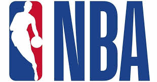

ここではNBAとは何なのかを説明していきたいと思います。
NBAとはNBA（National Basketball Association）は、ナショナル・バスケットボール・アソシエーション（NBA）、ウィメンズ・ナショナル・バスケットボール・アソシエーション（WNBA）、NBA Gリーグ（NBA G League）、2018年5月に開幕したNBA 2K Leagueの4つのプロスポーツリーグから構成されるグローバルなスポーツとメディアのビジネス団体です。
リーグは世界215の国と地域、50言語で試合や関連番組を放送、NBA関連商品は6大陸100の国と地域にある125,000以上の店舗で展開されています。2019-20シーズン開幕時のロスターには38の国と地域から108名のインターナショナルプレイヤーが名を連ねています。
 NBAにはどのくらいチームがある？NBAには30チームが所属しており、それらが東西2つのカンファレンスに分かれ、さらにそれぞれ3つのディビジョンに分かれています。ウェスタン・カンファレンス（Western Conference／西カンファレンス）はノースウェスト（北西）、パシフィック（太平洋）、サウスウェスト（南西）の3ディビジョンに15チームが所属しています。
＞ノースウェスト・ディビジョン（Northwest Division／北西地区）：
デンバー・ナゲッツ（Denver Nuggets）
ミネソタ・ティンバーウルブズ（Minnesota Timberwolves）
オクラホマシティ・サンダー（Oklahoma City Thunder）
ポートランド・トレイルブレイザーズ（Portland Trail Blazers）
ユタ・ジャズ（Utah Jazz）
＞パシフィック・ディビジョン（Pacific Division／太平洋地区）：
ゴールデンステイト・ウォリアーズ（Golden State Warriors）
ロサンゼルス・クリッパーズ（Los Angeles Clippers）
ロサンゼルス・レイカーズ（Los Angeles Lakers）
フェニックス・サンズ（Phoenix Suns）
サクラメント・キングス（Sacramento Kings）
＞サウスウェスト・ディビジョン（Southwest Division／南西地区）：
ダラス・マーベリックス（Dallas Mavericks）
ヒューストン・ロケッツ（Houston Rockets）
メンフィス・グリズリーズ（Memphis Grizzlies）
ニューオーリンズ・ペリカンズ（New Orleans Pelicans）
サンアントニオ・スパーズ（San Antonio Spurs）
イースタン・カンファレンス（Eastern Conference／東カンファレンス）: は、アトランティック（大西洋）、サウスイースト（南東）、セントラル（中部）の3ディビジョンに15チームが所属しています。
アトランティック・ディビジョン（Atlantic Division／大西洋地区）：
ボストン・セルティックス（Boston Celtics）
ブルックリン・ネッツ（Brooklyn Nets）
ニューヨーク・ニックス（New York Knicks）
フィラデルフィア・76ers（セブンティシクサーズ／Philadelphia 76ers）
トロント・ラプターズ（Toronto Raptors）
セントラル・ディビジョン（Central Division／中部地区）：
シカゴ・ブルズ（Chicago Bulls）
クリーブランド・キャバリアーズ（Cleveland Cavaliers）
デトロイト・ピストンズ（Detroit Pistons）
インディアナ・ペイサーズ（Indiana Pacers）
ミルウォーキー・バックス（Milwaukee Bucks）
サウスイースト・ディビジョン（Southeast Division／南東地区） ：
アトランタ・ホークス（Atlanta Hawks）
シャーロット・ホーネッツ（Charlotte Hornets）
マイアミ・ヒート（Miami Heat）
オーランド・マジック（Orlando Magic）
ワシントン・ウィザーズ（Washington Wizards）
NBAは1946年6月6日に、ニューヨークシティにあるコモドア・ホテルで創設されました。モーリス・ポドロフ（Maurice Podoloff）が初代プレジデントとなり、のちに肩書がコミッショナーに変更になりました。当初は11チームから成るリーグで、リーグの名称はBasketball Association of America（BAA）と言いました。なお、ポドロフの名前は、現在のNBA MVPトロフィーに冠せられています。
NBAは何試合行なわれる？レギュラーシーズンは各チーム82試合を行ないます
NBAプレイオフとは？東西の上位8チームがプレイオフに進出します。第1シードと第8シードがファーストラウンド（1回戦）で対戦し、以降第2シードと第7シード、第3シードと第6シードが対戦する方式です。
それぞれのラウンドはベスト・オブ・セブン（7戦制・4戦先勝）の2-2-1-1-1方式で争われます（上位シードが最初の2試合をホームで開催、下位シードが第3～4戦をホームで開催、第5戦以降を順番にホームで開催）。
各カンファレンスを制した2チームがNBAファイナルに進出し、同じくベスト・オブ・セブン方式で優勝を争います。
NBAリプレイセンターとは？ニュージャージー州シコーカスに2014-15レギュラーシーズン開幕時に開設されたNBAリプレイセンターは、NBAレフェリーのパフォーマンス強化とリプレイ・レビューの過程を早めるための画期的なハイスピード・アリーナ・ネットワークです。
NBAの視聴方法は？NBAの試合は世界200か国以上でテレビ放映されています。米国ではABC、ESPN、TNT、NBA TVで年間100試合以上が全米放映されています。
また、 NBAリーグパス では、世界中でライブとオンデマンドでNBAの試合を楽しむことができます。
NBAオールスター選手の選出方法は？先発選手は世界中のファンからの投票で選出されます。NBA.com、NBAアプリ、ソーシャルメディアなどから投票が可能です。
控え選手はNBAのヘッドコーチによって選出されます。選ばれた選手が故障により出場できなくなった場合は、NBAコミッショナーであるアダム・シルバーが代替選手を選出します。
先発選手が欠場することになった場合は、オールスターチームのヘッドコーチが控え選手のなかから代わりに先発する選手を選びます（コミッショナーによる代替選手も含む）。